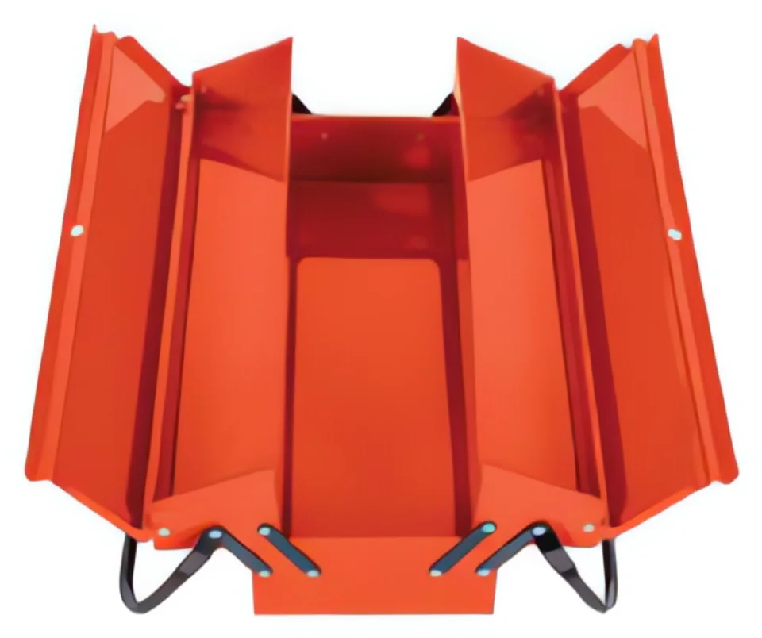

GROZ · Tool Storage
Cantilever Tool Boxes Heavy Duty
CAT NR MTB/3L · ORD NR 40012
| CAT NR (catalogue number) | MTB/3L |
|---|---|
| ORD NR (order number) | 40012 |
| Box quantity | 1 |
| Overall load capacity | 18 KG (39.5 LBS) |
| Net weight | 4.5 KG (10 LBS) |
| Steel gauge | 0.6 mm (24 Gauge) |
Open in the catalogue The catalogue PDF, page 38-39
From the GROZ Tool Storage catalogue. Not yet verified: these details were read from the printed catalogue automatically; check the catalogue page before ordering.